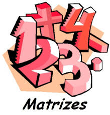

Uma matriz é um quadro retangular composto por números. Pode ser feito multiplicações com essa matriz e hoje vamos ver a multiplicação de uma matriz por um número escalar, ou seja um número, qualquer. Logo depois veremos um pouco da soma de matrizes.
